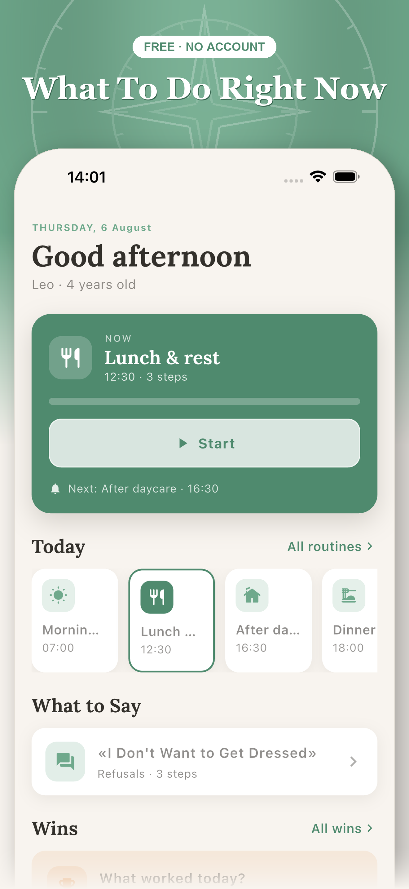
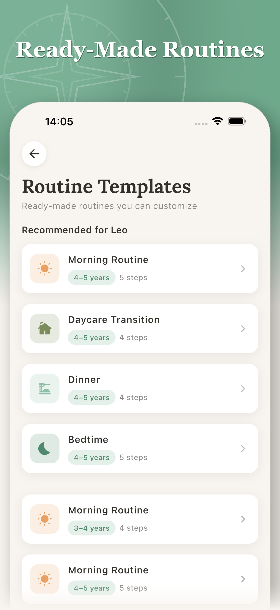
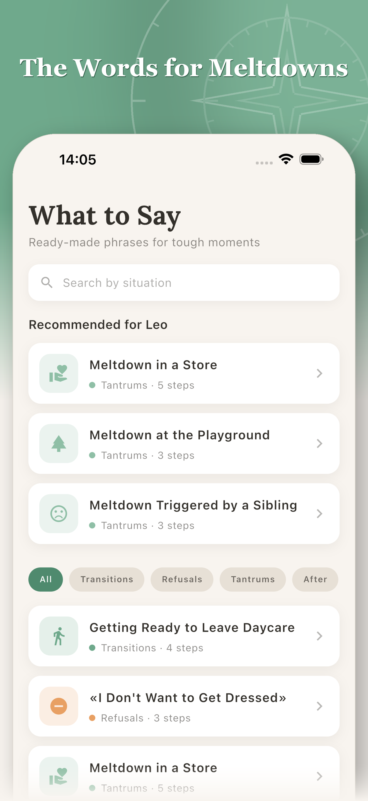
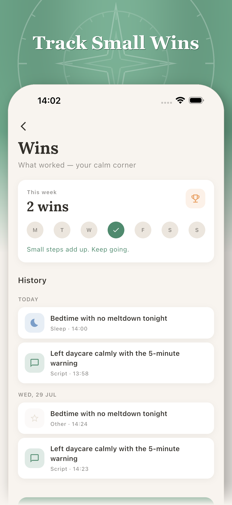

Know what to do next with your ADHD preschooler
Kin Compass gives parents of preschoolers (ages 3–5) with ADHD ready-made daily routines and step-by-step scripts for tantrums, transitions, and refusals — plus a simple way to track what worked.
Free · No account · Your entries stay on your device
A calm plan for the hardest moments
Most planners hand you a blank template and leave you to fill it in. Kin Compass starts with ready-made routines built for how an ADHD preschooler actually moves through the day, and scripts for the exact words to say when things fall apart — so you're never freezing in the moment.




What's inside
Everything a first-time ADHD parent needs, nothing you have to build yourself:
Ready-made routines
Morning, daycare, dinner, bedtime — visual step cards built for how an ADHD preschooler moves through the day. Edit, reorder, and save your own.
"What to say" scripts
The exact words for tantrums, transitions, and refusals, plus the why behind each one, grounded in behavioral therapy.
Alarm reminders
Reliable alerts for every routine step, not silent notifications you'll miss. Set quiet hours so bedtime stays calm.
Win tracking
Log what worked in one tap. Small wins add up and push back against burnout.
Tips & resources
Short, practical reads on meltdowns, sleep, screen time, and transitions.
General information, not a substitute for professional guidance. If your child's needs go beyond what a routine or script can address, bring what you've logged to their pediatrician or therapist.
Scripts for the hard moments
Read the exact words for refusing to get dressed, leaving the park, tantrums in the store, bedtime stalling and more, with the reasoning and sources behind each. Browse the scripts →
Free printable routine charts
Not ready to install anything? Download the same four routines as one-page printable charts: morning, after-daycare, dinner, and bedtime. Free, no signup. Get the printables →
Private by design
No account, no server, no sign-up. Every routine, script, and win stays on your device. Kin Compass was built this way from day one — your child's information is yours, never a data set.
Frequently asked questions
What ages is Kin Compass designed for?
Kin Compass is built for parents of preschoolers ages 3–5 with an ADHD diagnosis or going through an evaluation. The routines and scripts are written for that specific stage, not adapted from a general kids' planner.
Do I need an account, and is my child's information private?
No account or sign-up. Every routine, script, and win stays on your device — the app sends only limited usage analytics, and none of it includes your child's name, age, or challenges.
Is Kin Compass available yet?
Yes. Kin Compass is free on the iOS App Store and on Google Play.